先在「文本」區塊中，按下「方法二：從DocuSky下載文件集」區塊中的「顯示DocuSky列表：」按鈕開啟DocuSky Widget。
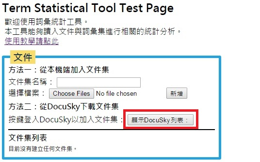尚未登入DocuSky的情況下，DocuSky Widget會要求使用者輸入帳號與密碼。
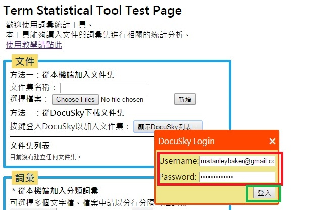成功登入後，會顯示使用者帳戶下現有的文件集列表。
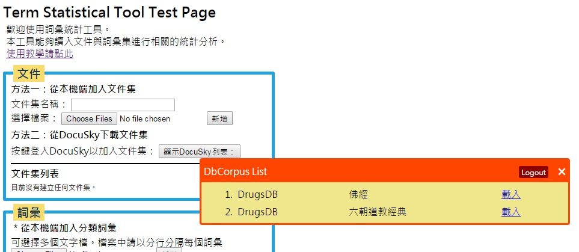在文件集列表中，選擇要載入的文件集，按下項目右側的「載入」按鈕。
在此以載入「DrugsDB」資料庫下的「佛經」文件集為例。
此時DocuSky Widget會顯示等待載入文件的提示圖示。
載入完成後，會在「文件集列表」區塊中看到新加入的文件集。
如果要刪除已建立的文件集，可以按下「文件集列表」中該項目右側的刪除("X")按鈕。
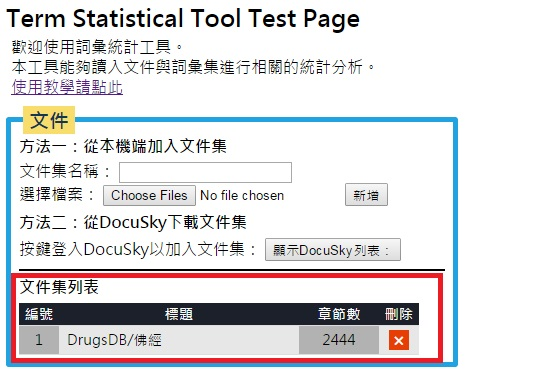本網站需要從使用者本機端的檔案建立分類詞彙庫。
在作為詞彙集的檔案當中，請用分行分隔每個詞彙。（請參考下面的範例）
請以UTF-8編碼格式的CSV檔（.csv）或純文字檔（.txt）儲存。
點選「從本機上傳檔案」中的「瀏覽 / Choose Files」按鍵，會開啟本機端檔案的選擇畫面。
選擇詞彙集檔案後，按下「新增」鍵即可新增詞彙集。
可以一次選擇多個檔案建立多個詞彙集。每個詞彙集會以檔案的檔名命名。
此處以載入本機端的18個分類詞彙表為例。按下「瀏覽 / Choose Files」按鍵可以顯示使用者本機端的檔案夾。
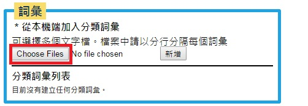按下「瀏覽 / Choose Files」按鍵後，可以瀏覽本機端的資料夾。在存放詞彙檔案的資料夾下選取所有的詞彙表檔案。
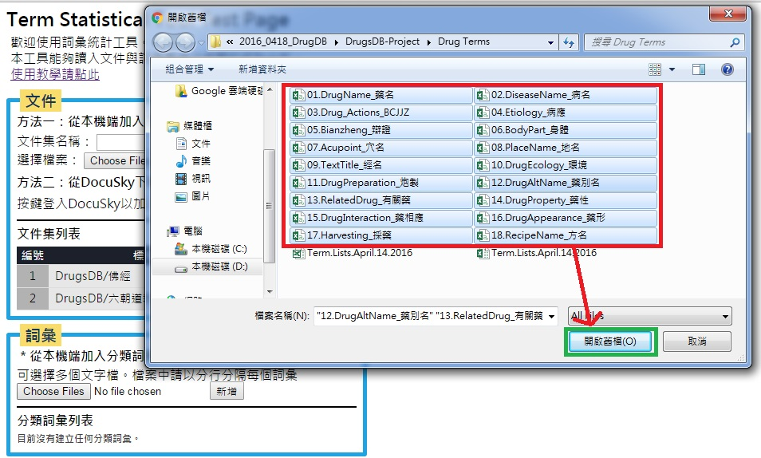選取完檔案後，按下「新增」鍵，等待畫面消失後可以在下方的「分類詞彙列表」中看到新增的詞彙集。詞彙集的名稱會以詞彙檔的檔名命名。
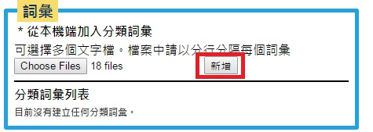如果要刪除已建立的詞彙集，可以按下「分類詞彙列表」中該項目右側的刪除("X")按鈕。
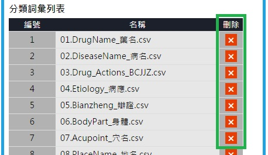「分析」區塊在使用者載入文件集與建立分類詞彙後，就會出現文件集列表讓使用者選擇要分析的文件集（可多選）。
選擇文件集後，按下「開始分析」執行分析程式。
此處我們選擇了已經建立的兩個文件集「佛經」和「六朝道教經典」。按下「開始分析」就會顯示運算提示畫面。
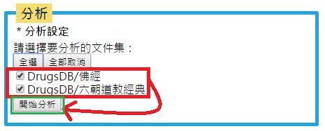提示畫面中會顯示經過的時間和目前完成分析的文件數。
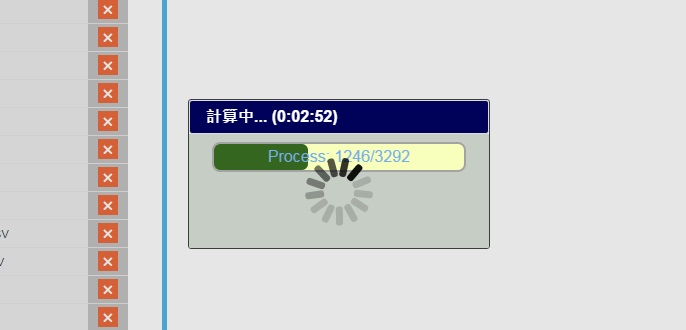分析結束後下方會顯示結束訊息，並且提供兩種CVS檔儲存格式供使用者輸出儲存。
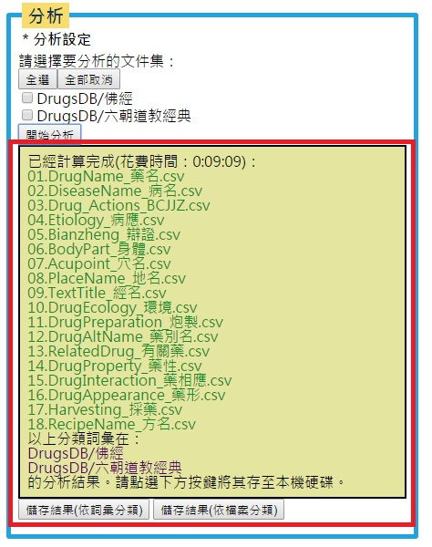